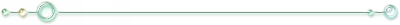
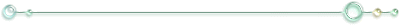

「殺してください」
左胸はそう訴えるけれど
いざ死神を前にしたら 命乞いをするに決まっているのに
すぐに大切な物を忘れてしまいそうになるこの鼓動に
誰か罰を与えてくれませんか
（Requiem Harmony）
蒼と赤の狭間
空と 血潮の 狭間
最も高い場所にある青（heaven）
最も低い場所にある赤（hell）
その狭間の小さな世界で
何もないその場所で
誰でもない誰かへ
蒼も赤も 白も黒も抱えて
ぼくは好き勝手に 歌い続ける。
（しろいゆきのなぞなぞ。）
こちらの意思とは全く関係なく、一方的に降ってくるもの。
とても冷たくて、痛いもの。
だけど自分で触れてみない限り、その冷たさが絶対に分からないもの。
降り積もったら、暖かくなるまでいつまでもいつまでもそこに留まるもの。
春と芽吹きを遠ざけるもの。
歌の中や物語の中や、窓の向こう、見たり聞いたりするだけならとても美しいのに、
いざ自分の上に降ってくれば辛くて堪らないもの。
ほんのすこしなら神様の贈り物。
どさどさ降れば、死の匂い。
そのただなかに裸で踏み込めば、朝日が来る前に絶対に死んでしまうもの。
なーんだ？
（こたえは）
（心の）
きららかな心の人になりたいと願っていました
願いの星だけを胸に抱き
走り続けるうちに
色々なものを落っことしてきました
きららかな心の人になりたいと願っていたのに
気づいたら
走らずに歩く他の誰かを
冷たい目で見ている私がそこに立っていました
たとえば貴方の伏せた目の中に映る宇宙のことだとか
誰かの手を掴むようにそおっと伸ばされた手のひらだとか
春の午後のぬくもりに
そのまま溶けていきそうな
鳥の声に耳を澄ませて
優しい音を数える度に
わたしは
ひとがすきだと
そんな歌声が 心の奥の何処かから
ゆららかな
子守唄の夢
（おやすみのかけら。）
信じさせてくれ
もう一度
世界は
美しいままだって
何でもかんでも受け入れていたら
大人の癖にお前の頭は空っぽなのかと言われた。
嫌いなものを嫌いだと拒んだら
良い大人が甘えるんじゃないと言われた。
なんだこの世界は。
大人になりたくないと思った時
子供でいられる時間は
きっともう終わっているのに
ある所に、小さな花が揺れていました
ある日、心無いものが花と花の友達をずたずたにしていきました
傷ついた花は、悲しかったので
誰かを癒せるように
優しい人になろうとしました
優しい人になろうとしたら
もっともっと傷が増えてしまったうえに
大切なものが何も守れなかったので
強い人になろうと思いました
花は守りたくて
頑張って頑張ってその為だけに頑張って
やっと強くなれたと思った時
もう花の周りには、誰もいませんでした
何が大切なものだったのかも
もう、思い出せませんでした
人を尊敬出来る力が
出会う人全ての
よいところを見つけてあげられる力が
可能性を狭める偏見というものを
打ち砕いてくれる力が
もしも
もしも全ての人にあったなら
もしもこの心にあったなら
この世界は、きっと
（そんなことはフェアリーテイル）
それでも人が願い続けるのだとしたら
きっと何千年も前から続いてきたその願いを
叶いっこないその願いを
愛しいと
